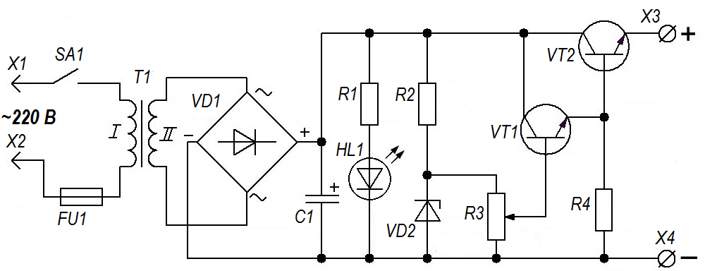
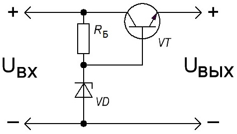
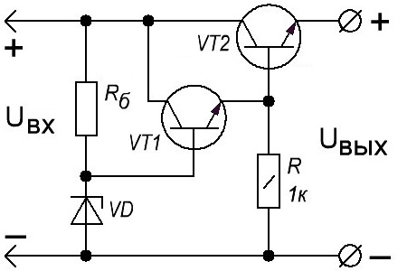
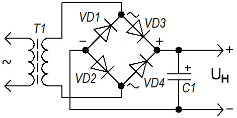

Регулируемый источник питания (14 В, 1 А)
Схема (рис. 1) источника питания является стандартной и не претерпела существенных изменений с 70-х годов прошлого века. Параметры (выходные ток и напряжения) зависят от используемых элементов. При использовании указанных в перечне элементов источник питания будет иметь диапазон регулировки выходного напряжения от 1,5 до 14 В, ток нагрузки - 1 А. Напряжение на выходе источника питания, выставляется по показаниям мультиметра в режиме вольтметра, постоянный ток. Если потребуется увеличить мощность данного источника питания, нужно взять боле мощный трансформатор и соответствующие элементы. Ниже приведены примеры расчета основных элементов схемы.

Рис. 1 - Схема источника питания
Таблица 1
| Обозначение | Наименование | Номинал | Примечание |
|---|---|---|---|
| С1 | Конденсатор электролитический | 2000 мкФ × 25 В | |
| HL1 | Светодиод | АЛ307 | |
| R1, R4 | Резистор постоянный | 1 кОм/0,5 Вт | |
| R2 | Резистор постоянный | 470 Ом/ 0,5 Вт | |
| R3 | Резистор переменный | 10 кОм | |
| Т1 | Трансформатор | С напряжением вторичной обмотки 12-13 В и током 1 А |
|
| VD1 | Диодный мост | КЦ405Б | Максимальный выпрямленный ток не менее 1 А |
| VD2 | Стабилитрон | Д814Д | Напряжение стабилизации 14В |
| VT1 | Транзистор биполярный | КТ315 | С любым буквенным индексом |
| VT2 | Транзистор биполярный | КТ817 | КТ805 |
Трансформатор T1 понижает сетевое напряжение 220 В до напряжения, которое определяется его парметрами. Это напряжение поступает на выпрямительный мост VD1. Диодный мост можно собрать на выпрямительных диодах (например, Д226, КД202). Конденсатор С1 сглаживает пульсации выпрямленного напряжения. Стабилизатор напряжения выполнен на стабилитроне VD1 с балластным резистором R2 и составном эмиттерном повторителе на транзисторах VT1 и VT2. С помощью переменного резистора R3 регулируется напряжение на выходе источника питания.
В схеме предусмотрена индикация включения на светодиоде. Включение - отключение осуществляется тумблером, путем коммутации питания 220 В, подводимого к первичной обмотке трансформатора.
Транзистор VT2 необходимо обязательно установить на радиатор. Площадь радиатора должна быть не меньше 50 см2. Для улучшения теплоотдачи от транзистора к радиатору, нужно применить термопасту.
При правильном монтаже схема совершенно не нуждается в настройке и начинает работать сразу.
Стабилизатор
В данной схеме используется параметрический стабилизатор (рис. 2). Состоит он из двух частей:
- стабилизатор на стабилитроне VD с балластным резистором Rб,
- эмиттерный повторитель на транзисторе VT.

Рис. 2 - Схема параметрического стабилизатора
Стабилизатор следит за тем, чтобы напряжение оставалось тем каким нам надо, а эмиттерный повторитель позволяет подключать мощную нагрузку к стабилизатору. Он играет роль усилителя.
Основные параметры блока питания - напряжение на выходе Uвых и максимальный ток нагрузки Imax.
Для данного блока питания, Uвых= 14 В, Imax= 1 А.
Определим какое напряжение Uвх мы должны подать на стабилизатор, чтобы на выходе получить необходимое Uвых.
Это напряжение определяется по формуле:
Uвх = Uвых + 3
3 - это падение напряжения на переходе коллектор-эмиттер транзистора VT. Таким образом, для работы нашего стабилизатора на его вход мы должны подать не менее 17 В.
Определим, какой нам нужен транзистор VT. Для этого нам надо определить, какую мощность он будет рассеивать:
Pmax = 1,3(Uвх - Uвых)Imax
Для расчета мы взяли максимальное выходное напряжение блока питания. Однако, в данном расчете, надо наоборот брать минимальное напряжение, которое выдает БП. А оно, в нашем случае, составляет 1,5 В. Если этого не сделать, то транзистор может выйти из строя, поскольку максимальная мощность будет рассчитана неверно.
Если мы берем Uвых =14 В, то получаем
Pmax = 1.3·(17-14)·1=3.9 [Вт].
А если мы примем Uвых =1,5 В, то
Pmax = 1.3·(17-1.5)·1=20,15 [Вт]
То есть, если бы не учли этого, то получилось бы, что расчетная мощность в 5 раз меньше реальной.
При выборе транзистора, кроме полученной мощности, надо учесть, что предельное напряжение между эмиттером и коллектором должно быть больше Uвх, а максимальный ток коллектора должен быть больше Imax. Выбираем КТ817.
Далее определим максимальный ток базы выбранного транзистора:
Iб max= Imax / h21Э min
h21Э min - это минимальный коэффициент передачи тока транзистора и берется он из справочника. Если там указаны пределы этого параметра (например, 30…40), то берется самый маленький. Если написано только одно число - 25, с ним и будем считать.
Iб max = 1/25 = 0,04 [А] (или 40 мА).
Стабилитрон выбираем по двум параметрам - напряжению стабилизации и току стабилизации. Напряжение стабилизации должно быть равно максимальному выходному напряжению блока питания, то есть 14 В, а ток - не менее 40 мА.

Рис. 3 - Схема параметрического стабилизатора с составными транзисторами
По напряжению подходит стабилитрон Д814Д. Но вот ток стабилизации 5 мА не подходит. Поэтому будем уменьшать ток базы выходного транзистора. А для этого добавим в схему еще один транзистор. Мы добавили в схему транзистор VT1. Эта операция позволяет нам снизить нагрузку на стабилитрон в h21Э раз. h21Э, разумеется, того транзистора, который мы только что добавили в схему. Выбираем КТ315. Его минимальный h21Э равен 30, то есть мы можем уменьшить ток до 40/30=1,33 мА, что нам вполне подходит.
Рассчитываем сопротивление и мощность балластного резистора Rб.
Rб = (Uвх - Uст)/(Iб max + Iст min)
где Uст - напряжение стабилизации стабилитрона,
Iст min - ток стабилизации стабилитрона.
Rб = (17-14)/((1,33+5)/1000) = 470 [Ом].
Теперь определим мощность этого резистора:
Prб=(Uвх-Uст)2/Rб.
То есть
Prб = (17-14)2/470 = 0,02 [Вт].
Таким образом, из исходных данных - выходного напряжения и тока, мы получили все элементы схемы и входное напряжение, которое должно быть подано на стабилизатор.
Выпрямитель

Рис. 4 - Схема выпрямителя
Учитывая то, что мы знаем, какое напряжение нам надо подать на стабилизатор - 17 В, вычислим напряжение на вторичной обмотке трансформатора. Учитывая то, что конденсатор фильтра увеличивает выпрямленное напряжение в 1,41 раза, получаем, что после выпрямительного моста напряжение равно
17/1,41 = 12 В.
На выпрямительном мосту мы теряем порядка 1,5-2 В, следовательно, напряжение на вторичной обмотке должно быть
12+2=14 В.
Если такого трансформатора не найдется, можно применить трансформатор с напряжением на вторичной обмотке от 13 до 16 В.
Определим емкостьсгдаживающего конденсатора:
Cф = 3200Iн/UнKн
где
Iн - максимальный ток нагрузки,
Uн - напряжение на нагрузке,
Kн - коэффициент пульсаций.
В нашем случае:
Iн = 1 А,
Uн=17 В,
Kн=0,01.
Cф = 3200·1/14·0,01 = 18823 [мкФ].
Однако, поскольку за выпрямителем идет еще стабилизатор напряжения, мы можем уменьшить расчетную емкость в 5…10 раз. То есть 2000 мкФ будет вполне достаточно.
Осталось выбрать выпрямительные диоды или диодный мост. Для этого нам надо знать два основных параметра - максимальный ток, текущий через один диод и максимальное обратное напряжение, так же через один диод.
Необходимое максимальное обратное напряжение считается так
Uобр max = 2Uн,
то есть
Uобр max= 2·17 = 34 [В].
Максимальный ток, для одного диода должен быть больше или равен току нагрузки блока питания. Ну а для диодных сборок в справочниках указывают общий максимальный ток, который может протекать через эту сборку.